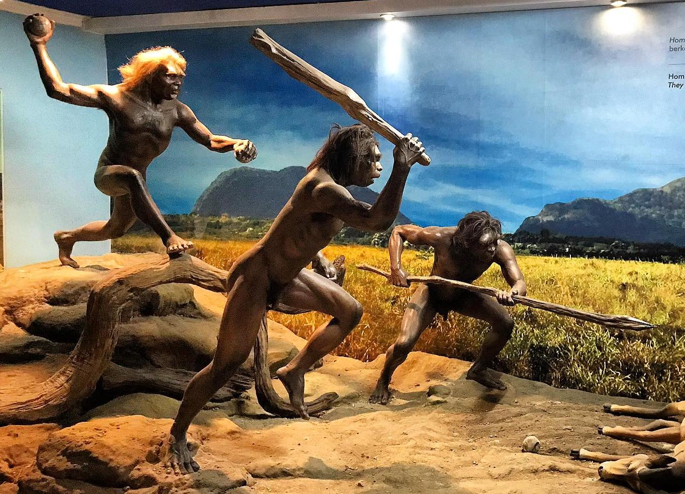
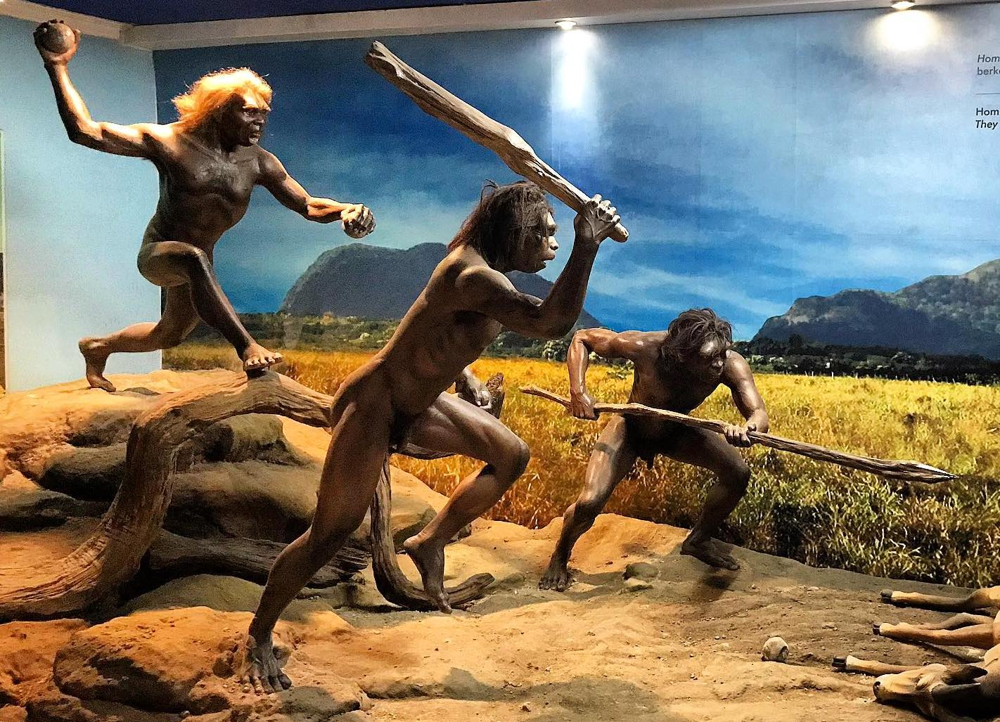
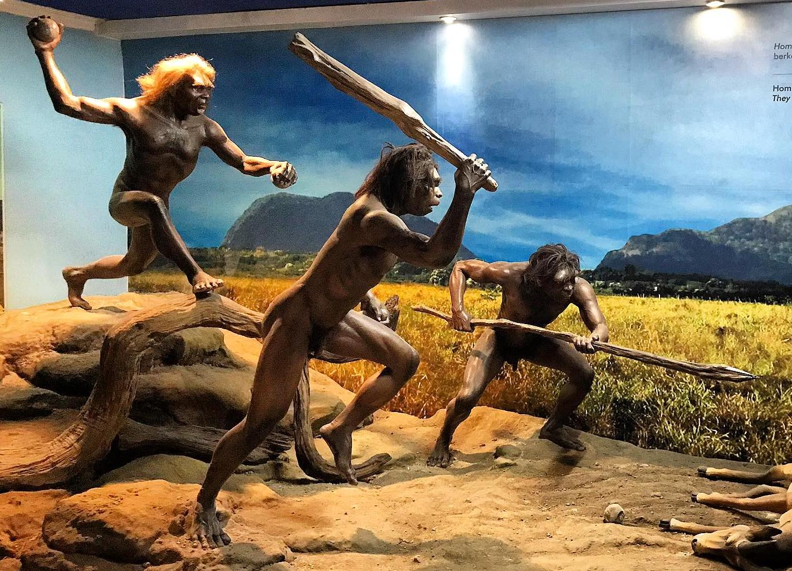
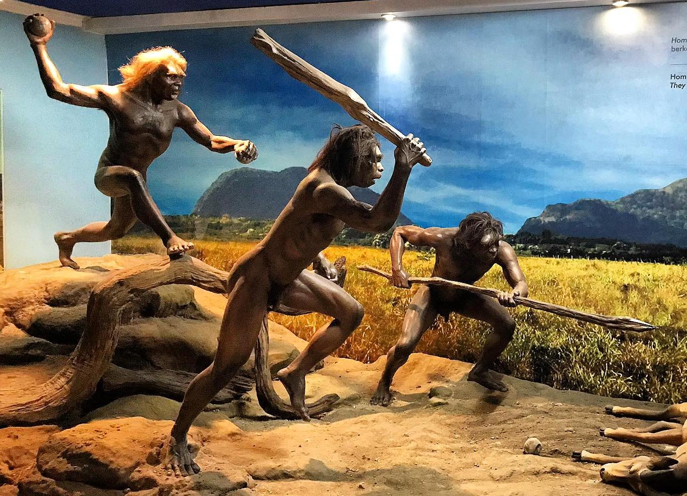

 

Eksistensi Museum Nasional diawali dengan berdirinya suatu himpunan yang bernama Bataviaasch Genootschap van Kunsten en Wetenschappen, didirikan oleh Pemerintah Belanda pada tanggal 24 April 1778. Pada masa itu di Eropa tengah terjadi revolusi intelektual (the Age of Enlightenment) yaitu dimana orang mulai mengembangkan pemikiran-pemikiran ilmiah dan ilmu pengetahuan.
Pada tahun 1752 di Haarlem, Belanda berdiri De Hollandsche Maatschappij der Wetenschappen (Perkumpulan Ilmiah Belanda). Hal ini mendorong orang-orang Belanda di Batavia (Indonesia) untuk mendirikan organisasi sejenis.
Bataviaasch Genootschap van Kunsten en Wetenschappen (BG) merupakan lembaga independen yang didirikan untuk tujuan memajukan penelitian dalam bidang seni dan ilmu pengetahuan, khususnya dalam bidang-bidang ilmu biologi, fisika, arkeologi, kesusastraan, etnologi, dan sejarah, serta menerbitkan hasil penelitian. Lembaga ini mempunyai semboyan “Ten Nutte van het Algemeen” (Untuk Kepentingan Masyarakat Umum).
Salah seorang pendiri lembaga ini, yaitu J.C.M. Radermacher, menyumbangkan sebuah rumah miliknya di Jalan Kalibesar, suatu kawasan perdagangan di Jakarta-Kota. Ia juga menyumbangkan sejumlah koleksi benda budaya dan buku yang amat berguna, yang menjadi cikal bakal berdirinya museum dan perpustakaan.
Selama masa pemerintahan Inggris di Jawa (1811–1816), Letnan Gubernur Sir Thomas Stamford Raffles menjadi Direktur perkumpulan ini. Karena rumah di Kalibesar sudah penuh dengan koleksi, Raffles memerintahkan pembangunan gedung baru di Jalan Majapahit No. 3 sebagai museum dan ruang pertemuan untuk Literary Society. Sekarang lokasi ini menjadi kompleks gedung Sekretariat Negara di dekat Istana Kepresidenan.
Jumlah koleksi milik BG terus meningkat hingga museum di Jalan Majapahit tidak dapat menampungnya. Pada tahun 1862, pemerintah Hindia-Belanda membangun gedung museum baru di Jalan Medan Merdeka Barat No. 12 (dulu Koningsplein West). Gedung ini baru dibuka untuk umum pada tahun 1868.
Museum ini dikenal luas di kalangan masyarakat Indonesia, khususnya warga Jakarta. Disebut “Museum Gajah” karena di halaman depannya terdapat patung gajah perunggu hadiah dari Raja Chulalongkorn (Rama V) dari Thailand pada tahun 1871. Kadang disebut juga “Gedung Arca” karena banyaknya arca yang tersimpan di dalamnya.
Pada tahun 1923, perkumpulan ini memperoleh gelar “koninklijk” karena jasanya dalam bidang ilmiah dan proyek pemerintah, sehingga namanya menjadi Koninklijk Bataviaasch Genootschap van Kunsten en Wetenschappen. Setelah kemerdekaan, pada 26 Januari 1950, namanya diubah menjadi Lembaga Kebudayaan Indonesia dengan semboyan baru untuk memajukan ilmu-ilmu kebudayaan Indonesia.
Pada 17 September 1962, Lembaga Kebudayaan Indonesia menyerahkan pengelolaan museum kepada pemerintah Indonesia yang kemudian menjadi Museum Pusat. Berdasarkan SK Mendikbud No. 092/O/1979 tertanggal 28 Mei 1979, statusnya ditingkatkan menjadi Museum Nasional yang kini berada di bawah Kementerian Pendidikan dan Kebudayaan.